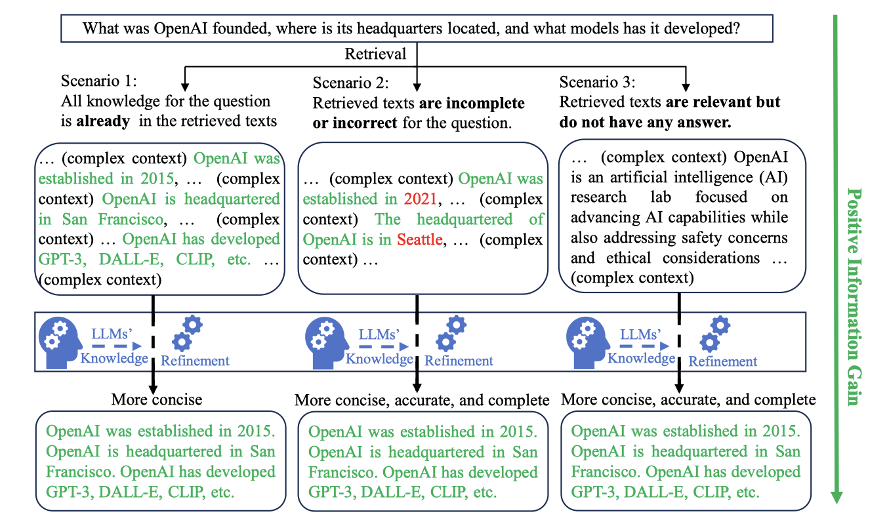

Noise in RAG Summary
Noise in RAG Summary
I. The Definition of Retrieval Noise in RAG
Retrieval noise refers to irrelevant, counterfactual, or vague information retrieved from an external knowledge base that does not contribute to the generation of a correct response. (It may mislead the generation by offering conterfactual info or intervening the LLM to focus on the useful info)
II. Taxonomy of Retrival Info (Noise)
Relevant in the following graph denotes info with high semantic similarity to the qustion.
%%{ init: {"themeVariables": { "fontSize": "22px", "nodeWidth": 120, "nodeHeight": 30 } } }%%
graph
Main[Retrival Info]
Main --> A[Noise]
Main --> B[Useful Info]
A --> A1(Persistent Misinfo)
A1 --> A1a(relevant PM)
A1 --> A1b(irrelevant PM)
A --> A2(Obsolete Info)
A2 --> A2a(relevant OI)
A2 --> A2b(irrelevant OI)
A --> A3(Ambiguous Info)
A3 --> A3a(relevant AI)
A3 --> A3b(irrelevant AI)
A --> A4(Inconsequential Info)
A4 --> A4a(relevant II)
A4 --> A4b(irrelevant II)
B --> B1(Golden Info)
B --> B2(Intermediate Info)
2. Retrieved Info: 1) Intermediate Info: Donald Trump is the farther of Barron Trump. 2) Intermediate Info: Fred Trump is the farther of Donald Trump. 3) Golden Info: Fred Trump is the grandpa of Barron Trump. 4) Persistent Misinfo: Macron is the president of the US now. 5) Obsolete Info: Obama is the president of the US now. 6) Ambiguous Info: Do you know who is Trump? 7) Inconsequential Info: Trump used to be the president of the US.
III. Current Paradigm to Deal with the Retrieval Noise
1. Task Specific Dataset Construction 为应对不同类型的Noise对RAG生成产生的影响，其中一类方法是为针对Noise构建特定的数据集，具体实例如下：
1）通过构造包含Retrieval Noise的QRA数据集,
并在QRA数据集上对LLM模型进行微调。 [Question, Retrival Documents
(including Retrieval Noise), Answer] 让模型对Retrieval
Noise“见多识广”，具备区分Retrieval Noise和Useful Info的能力； 
2）有一点点类似于CoT的思想，通过构造Answer包含【区分Retrieval Noise】，【对Retrieval Info进行推理】等内容的reasoning-augmentated QRA数据集并微调。 [Question, Retrival Documents, Answer(including reasoning process)] 此类数据集的Answer包括问题分解，将retrival info进行筛选等过程，这样可以强化模型逻辑推理能力与信息筛选能力，让训练后的模型输出不受Retrieval Noise干扰的正确回答。
2. Applying New Training Paradigm 另类方法是针对Noise设定特定的训练方法与损失函数对LLM进行微调，具体实例如下：
1）通过分层训练的方法，让LLM先具备识别Retrieval Noise的能力，再让LLM具备不受Retrieval Noise干扰作出正确Answer的能力； 备注：此实例目前没有相关研究，下图为应对命名实体识别的类似实例示意图。
2）使用一些特定的学习范式，比如对比学习，自适应学习，对抗训练等。
3. Add Extra Verification Distill Module 最后一类方法即在Retriver和LLM中间加入一个检验模块筛选模块，将检索到的信息进行重排序or将检索到的信息进行提炼整合，筛除Retrieve Noise。 E1  E2 E3
IV. Current Challenges of Retrieval Noise
在RAG系统中，当Top-k检索的k值增大时，有助于问题回答的信息包含在检索文档中的可能性逐渐增大，但也同时不可避免地引入检索噪声(Retrieval Noise)。Retrival Noise中的反事实信息，有歧义信息可能会误导使用错误知识作出回答，Retrival Noise中的正确无用信息可能会导致模型对有助于问题回答的信息关注程度下降，最终使得模型回答质量急剧下降。
针对Retrival Noise严重影响RAG生成质量这一问题，诸多不同范式的解决方案也随之提出。然而这些方法普遍存在如下共性问题：
- 噪声类别的局限性：目前的方法大多针对某一种特定类型的噪声，例如相关但无用的文本或反事实文本（counterfactual text）。这导致它们缺乏针对所有噪声的统一解决方案，难以保证LLM在多种噪声共存的复杂环境下作出准确回答。
- 缺乏系统性分类和全面评估：现有研究中，针对RAG系统中噪声的分类缺乏系统性，目前少有研究完整地揭示不同类型噪声对生成质量的具体影响。
- 缺乏统一的噪声数据集与评估体系：缺乏统一标准的现状，使得各研究结果难以横向对比，限制了新方法的进一步发展。
- 当前方法的LLM或Extra Verification Distill Module是否会对与Question包含相同概念但表述方式不同的Useful Info误判为Noise(相关无用Noise)，是否会对一些特别新的Useful Info误判为Noise(反事实Noise)？（当前QRA训练数据集的R缺少与Question包含相同概念但表述方式不同的Useful Info）
- 当前的方法难以让模型识别过时信息以及一些小众的永久反事实信息(比如凭空捏造的一些实体与其关系等)，因为他们没有内在共同点，也无法保证所有的过时信息和小众的永久反事实信息都被训练到，并且过时信息永远都在变化。
- 解决Retrieval Noise这一问题需要使RAG同时获得识别Noise与充分使用Useful Info的能力。单一地添加Extra Verification Distill Module(获得识别Noise和Useful Info的能力)，而不对LLM进行微调(没有使其获得正确使用Useful Info的能力)，是否会出现LLM内部知识与Useful Info冲突的情况，导致无法充分使用Useful Info作出回答。
- 目前的解决方法大多关注在Generator上，也需要从Retriever的角度考虑如何解决Noise问题。
- 目前训练Noise RAG时有一些方法使用的是[Q, 单一retrieve documnt, A]训练，而RAG实际使用情况下可能是依托多retrieve document作出回答。